データの二点間距離が同じでも、「何を測定するか」が違えば、見えるデータの姿は変わる。この違いを残したまま、データ集合どうしの近さや極限を扱えるだろうか。本論文はこの問いに答える。特徴を選ぶ枠組み自体は先行研究にある。本論文では、その枠組み全体に距離を入れたとき、空間としてどのような性質が現れるかを明らかにする。
先行研究――この論文に入る前の道筋
Gromovのmetric measure space（mm-space）は、点の集合、距離、確率測度の三つ組だ。有限データなら、は点を抽出する確率と思えばよい。一般には、開集合から生成されるBorel集合に確率を割り当てる。厳密にはを完備可分とし、をBorel確率測度として、その台が全体になることも要求する（v1定義2.4）。Cauchy列とは、どんなに対しても、十分先の任意の二項間の距離が未満になる列をいう。完備な空間では、そのような列が空間内に極限を持つ。また、可分な空間では可算個の点を使って全点を任意に細かく近似でき、台が全体に一致する測度では、各点のどんな開近傍にも正の確率がある。幾何と抽出頻度を一緒に扱うことで、少数の外れ値と典型的な点を区別できる。
この空間で測定に使う候補は、実数値の 1-Lipschitz関数、すなわちを満たす関数だ。その全体をと書く。この条件は、近い点を測定によって大きく引き離さないよう制限する。Gromovの観測距離では、二つの空間の測定関数を同じ確率空間へ移し、その関数族どうしをどれほど近づけられるかで空間を比べる。測定値の分布を一つずつ比べるだけではなく、全測定に共通する対応を選ぶところが要点だ。これに対しボックス距離では、確率の大部分を占める点の対応を選び、その上で点間距離のずれを比べる。古典的なmm-spaceにおける背景はGromov [3]とShioya [8]が与えており、本論文の定義はv1定義4.2に基づく。
Pestov [7]は、高次元データの「次元の呪い」を、測定値がほとんど一定になる測度集中と結びつけ、内在次元を公理的に捉えた。たとえば検索のために点からの距離を測るとき、大部分の点がほぼ同じ値を返せば、その測定だけでは候補を絞りにくい。この例は動機の説明であり、すべての高次元データや検索法に同じ障害が生じるという主張ではない。
観測直径を使うと、測度集中を数で表せる。確率測度が実数直線上にあるとき、に対して
と置く。ここでは集合の直径だ。この定義は、少なくともの確率を収めるのに必要な幅を測っている。測定の値の分布は押し出し測度で表す。これはによって定まる。特徴の族を指定すると、
が全特徴にわたる最大の幅になる（v1定義3.20。mm-spaceではとする）。この値が小さいなら、各特徴について、大部分の測定値を狭い幅に収められる。ただし、その幅の中心や、そこから除く点集合は特徴ごとに異なってよい。
全1-Lipschitz関数を扱う計算上の負担を背景に、Hanika–Schneider–Stumme（HSS）[4]は、使う測定を特徴関数の族として指定するgeometric data set（GDS）を導入した。たとえば指定点からの距離だけを特徴にすれば、全測定を列挙せずに済む。HSSはGDSと観測距離を定義したうえで、距離の公理を証明し（定義3.1・3.3、定理3.10）、観測直径や内在次元も調べた（第4–6節）。これらは本論文に先立つ成果である。
距離をどう計算し証明するかという側では、Nakajima [5]が古典的なmm-spaceの観測距離とボックス距離を、二つの測度を周辺分布にもつ結合で表す特徴づけを示した（arXiv:2204.04893）。結合とは、二つの空間から点を同時に選ぶ確率分布だ。この表示を使えば、距離の比較を「どの点どうしを対応させるか」という問題に置き換えられる。ただし、Nakajimaの結果が扱うのはmm-space上の距離である。特徴族を自由に持つGDS全体でも同じように距離の位相的性質を調べられるかは、別の問題として残っていた。
ここから先が、この論文の問い
この流れの先にある問いは、点間距離を特徴族から作るGDS全体でも、古典的なmm-spaceと同じ性質が保たれるかどうかだ。古典的な場合、観測距離空間は可分であり、ボックス距離空間は完備かつ可分である。一方、論文の序論によれば、GDS上の観測距離の位相的性質は一般には調べられておらず、GDS同士のボックス距離もまだ定義されていなかった。
本論文が加える結果
この論文は、(i) GDSの観測距離空間が非可分であること、(ii) mm-spaceのボックス距離をGDSへ拡張すること、(iii) 拡張したボックス距離空間が完備だが非可分であること、を示す。定理1.1と定理1.4が主な結論を述べ、定理4.13、定理5.15、定理5.22が距離の特徴づけや完備性を支える。可分性は「可算個のモデルで全対象を近似できるか」を問い、完備性は「互いにいくらでも近づく列の極限が同じ枠組み内に残るか」を問う。論文の答えは、特徴を自由に選ぶと前者は失われる一方、ボックス距離については後者が保たれる、というものだ。
データの距離を、特徴から作る
通常の距離空間では、点どうしの距離を最初に与える。一方、この論文で扱う幾何的データ集合では、まずデータ点の集合と、各点を実数に写す関数の族を選ぶ。そのうえで
によって点どうしの距離を定める。つまり、二点の間隔は、採用した特徴関数たちがその二点をどれだけ異なって測るかの上限だ。無限族では最大値を取る特徴があるとは限らない。特徴が一つだけなら、その値の差になる。
ただし、GDSではとがともに非空であることに加えて、二点ごとの上限が有限（tame）であること、特徴族が異なる二点を区別することを要求する。tameだけなら得られるのは擬距離、つまり異なる点の間でも距離が0になりうる関数だ。特徴族が点を区別すれば、この擬距離は距離になる。さらにその距離が完備可分で、台が全体のBorel確率測度を持つ三つ組をGDSと呼ぶ（v1定義3.1・3.2・3.8）。定義から、各はを満たす。
逆にmm-spaceではとすると元の距離を回復する。一方の不等式は1-Lipschitz条件から従い、他方はを使えばとなる（命題3.4）。したがってGDSはmm-spaceを含む。ただし同じ距離を作る特徴族が一つとは限らず、その選択もデータの一部に残す。
小さな計算例として、二点、特徴族、値と、確率測度を取る。ここでは点に確率1を置くDirac測度だ。このときであり、有限距離空間は完備可分で、測度の台も全体だ。したがってこれは幾何的データ集合の例になる。これは定義の計算を示すための例で、論文中の例ではない。
この例ではとなる。したがってなら観測直径は2だが、なら0になる。後者では半分の質量を捨ててもよいので、二つの値を同時に残す必要がない。
同じ二点で特徴をに替えても点間距離は2のままだ。距離を作る際には定数の差が消えるが、特徴の値そのものは変わる。この違いが後の一点例で決定的になる。一方、なら二点の距離が0となり、そのままではGDSではない。特徴が区別しない点は、後で現れる商の構成では同じ点として扱う。
何を同じGDSと見なすか
特徴を点ごとの収束で閉じた族をと書く。点ごとの収束とは、各固定した点で関数値が極限値に近づくことをいう。1-Lipschitz関数族では、この閉包は後で定義するKy Fan距離による閉包とも一致する（命題3.12、注意3.13）。本論文では、測度を保つBorel写像で
を満たすものがあるとき、二つのGDSを同型とする（定義3.14）。ここではを表す。比較対象の空間は、この同型で同じと見なされるGDS全体からなる。特徴族に閉包を取ることで、元の特徴で任意に近似できる特徴を追加しただけの違いを取り除く。一方、特徴値を平行移動しても同じと見なすわけではない。
特徴を測る距離
二つのデータ集合を比べるには、まず同時抽出の仕方を決める。結合とは上のBorel確率測度で、側と側に射影した分布がそれぞれとになるものをいう。その全体をと書く。具体的には、射影、に対し、とが成り立つ（定義2.9）。
たとえば両側が二点で各点の確率が半分なら、同じ順の点対に各を置く結合も、四つの点対に各を置く独立結合も作れる。どちらも各側の抽出頻度を保ちつつ、点どうしの対応を異なる形で表す。
同じ確率空間上の実数値可測関数を、Ky Fan擬距離
で比べる（定義2.7）。この擬距離は、値の誤差と許容幅を超える確率の両方を、同じで抑える。常にであり、確率0の集合上だけで異なる関数どうしの距離は0になる。そのため、一般の可測関数上では距離ではなく擬距離となる。また、この擬距離でがに収束することは、どんな固定幅に対してもとなること、つまり確率収束と同値だ。
関数間の擬距離から、非空な関数族のHausdorff擬距離を
と作る。この距離は、片側のすべての関数を相手側の関数でどこまで近似できるかを測り、逆方向についても同じ量を測って大きい方を取る。各関数の近似相手は個別に選べるため、関数族の間に全単射を要求するものではない。
結合上では、とをとに移して比較できる。定理4.13は
と述べる。この式では、まず全特徴に共通する結合を一つ選び、その後で各特徴の近似相手を選ぶ。この順序を入れ替えると、一般には同じ距離にならない。また、関数の誤差を許す例外集合は特徴の組ごとに変えてよい。後で見るボックス距離では、この点の扱いが変わる。
定義4.2のパラメータ表示と、定理4.13で最小値が取れる理由
本来の定義ではとLebesgue確率測度を使い、となるBorel写像をパラメータと呼ぶ。側のパラメータと合わせて、上の族とのHausdorff–Ky Fan距離の下限を取るのが定義4.2だ。
組の押し出しは結合になる。逆に任意の結合もこの形で表せる（補題4.7）。また誤差事象の確率は押し出しで変わらないので、二つの表示の関数間距離は一致する（補題4.8）。したがって両方の下限は同じになる。
最小値の存在を示すには、結合全体の弱コンパクト性（補題2.11）と、結合を変えたときの目的関数の連続性（補題4.12）を使う。ここでいう弱収束は、すべての有界連続関数について積分が収束することを指し、Prohorov距離がこの収束を表す。したがって、最適化する結合の列から極限を取り、その極限でも誤差が保たれる。この部分ではv1の上記二補題を背景結果として使っている。mm-spaceでの先行結果はNakajima [5]定理5.2にあり、定理4.13はその特徴づけをGDSに適用する。
定理1.1――観測距離では可分でない
一点集合の唯一の点をとし、各自然数を値にする関数を特徴として並べる。非空な自然数の部分集合に対しては、特徴値の集合がちょうどとなる一点データ集合
を作る。点は常に同じ一つなので、違いは特徴族だけにある。
たとえば、これは「点の位置を変えず、点を測る物差しの目盛りの集合を変える」操作だ。これはイメージのための言い換えであり、定理の内容は次のとおり。
定理1.1（非空なに限定した形）. は、観測距離を備えた幾何的データ集合全体の空間の中で、非可算な離散部分集合をなす。したがってこの空間は可分でない。
arXiv v1の定理1.1は全体を添字にしているが、定義3.1–3.2では特徴族を空でないものとして扱う。そこで、ここではの項を除いている。この調整は添字の表示だけに関わり、非可分性の結論は変わらない。
なぜ異なる二項の距離が1になるのか。一点上の定数のKy Fan距離は。異なる非空部分集合には、片方にだけ属する自然数がある。その値から相手側のどの整数値へも距離は1なので、Hausdorff距離の少なくとも一方向が1になる。全体の上限も1だから、観測距離はちょうど1だ。片方が他方に含まれる場合には、一方向だけが1であれば足りる。
自然数の部分集合全体は非可算であり、異なる二項間の距離が常に1なので、得られた族は離散部分集合になる。可分距離空間では互いの距離が一様に離れた部分集合は可算に限られる。したがって、この族の存在から定理の結論が従う。距離空間の場合には知られていた可分性が、特徴族を自由に選べる幾何的データ集合では失われる。

図1. 二つの異なる非空整数部分集合の対称差から、対応できない特徴値を一つ選べる。その値と相手側のどの整数値との距離も、切り詰めた距離で1になる。図のA,Bは仕組みを示す例であり、定理はすべての異なるA,Bに適用する。
定理1.1の証明を細部まで見る（Remark 4.6の議論）
まず各非空集合に対し、点集合が一つのGDS を作る。特徴は唯一の点にを返す定数関数で、とする。一点上で誘導距離は常にであり、唯一の確率測度はだから、これは定義を満たす。
一点確率空間からのパラメータは、区間上のほとんどすべての点をに送る写像しかない。したがって、特徴とを結合上で比べたKy Fan距離は、二つの定数値の差をで切り詰めた距離
になる。実際、誤差幅なら誤差を超える点の確率はなので許されず、またはなら許される。
特徴族のHausdorff距離は、各値を相手の値集合で近似する距離を両方向に取ったものだ。なら、必要に応じてを交換してを選べる。すべてのは異なる整数なので、したがってからまでの切り詰め距離はちょうど。よってHausdorff距離は少なくともである。一方、切り詰め距離の最大値自体がなので、Hausdorff距離はちょうどになる。定理4.13の結合による特徴づけを用いても、結合は一点分布しかないから
こうしては非可算な一様離散族になる。可分距離空間における任意の-分離族は可算だ。実際、可算稠密集合を取り、各の開球に入る点を選ぶ。異なる中心の距離はだからこれらの開球は交わらず、は単射となる。これはの可算性に矛盾する。ゆえには非可分。
この計算はv1注意4.6の機構を、Ky Fan距離の定義から書き直したもの。原文の同箇所の表示にあるではなく、定数間の距離を1で切り詰めてからHausdorff距離を取る。非可分性は点集合の大きさから来るのではなく、一点上でも選べる特徴族の多さから生じている。
ボックス距離を特徴族へ拡張する
ボックス距離では、結合した二つの点の組のうち、確率の大部分を占める部分集合上で、二つの空間の幾何が近いことを求める。距離空間の場合は、その部分集合内の二組について点間距離の差を測る。幾何的データ集合では、点間距離を特徴族が作るので、この差の代わりに、両側の特徴族がその部分集合上でどれだけ近いかを測る。
記号を明確にしておく。上で二つの特徴とを引き戻すと、関数とが得られる。その間の一様擬距離を
と書き、はこの擬距離から作る関数族間のHausdorff擬距離を表す。上限はでもよく、ではと約束する。上だけで一致する関数を区別しないので、一般には擬距離だ。
定義1.3・5.1（ボックス距離）. をの結合、をの閉集合全体に動かして
と定める。
第一項は捨てる質量、第二項は残した場所での一様誤差だ。観測距離と違って、今度は同じ良い集合上で、すべての特徴を近似する。も許すので。定理5.15は、特徴族を閉包に替えれば最適なが実際に取れると述べる。これにより、後の完備性の構成で各段の誤差をそのまま使える。
この定義が従来のボックス距離を含む理由も、特徴の見方から説明できる。距離空間の距離は、すべての1-Lipschitz関数の差の上限として書ける（命題3.4）。結合した点の組の閉集合上では、二つの空間の距離のずれ、すなわち歪みは、それぞれの空間の1-Lipschitz関数族をに引き戻したときのHausdorff距離の二倍に等しい（補題1.2）。新しい定義は、距離空間で使っていた「距離のずれ」を「特徴族のずれ」に置き換えたものになっている。
ここで、のとき、その歪みを次のように定める。
だ。Nakajima [5]定理1.1にある従来の式では、ボックス距離の表示の第二項に、このを置く。係数2を入れると、その式と厳密に一致する。一般のGDSでは、特徴族が全1-Lipschitz関数を含むとは限らない。そのため歪みだけでは特徴の違いを捉えきれず、たとえば一点上の異なる特徴族では、点間距離の歪みが0でも特徴の誤差が残る。
係数2が現れる理由：補題1.2と命題5.8–5.9の計算
とし、と置く。任意のとに対し、上でとなるを選べる。二つの組について
にわたり上限を取り、とすると。逆向きも同じなので。両端で特徴近似の誤差を一度ずつ使うのが2の理由だ（命題5.8の証明）。
逆向きは、、の場合に示す。とし、から
を作る。一点を固定すると、上限はその組を代入して有限に抑えられる。下限も
で抑えられるのでは実数値だ。三角不等式を各項に使って下限を取るとは1-Lipschitz。さらにでは、下限に自身を使ってを得る。他方、任意のに対して
だからとなる。よってであり、逆方向も同じ議論からを得る。先に示した不等式と合わせれば、補題1.2の等式が従う。の場合は、先のからとなる。また、ではボックス距離の目的関数が1になるため、ここでは非空の場合の等式だけを使えばよい。
この下限による関数の構成が命題5.9の証明の中心であり、任意に選んだ特徴族には適用できない。全1-Lipschitz関数なら、作ったが必ず相手の族に入ることが使われている。
定理1.4――ボックス距離は完備だが可分ではない
定理1.4. は完備であり、可分ではない。
非可分性は定理1.1と命題5.2から従う。命題5.2は観測距離がボックス距離以下であることを述べるので、観測距離で互いに距離1離れた非可算族は、ボックス距離でも互いに距離1以上離れている。なお、本文の定理5.22が完備性を示し、序論は命題5.2と定理1.1を使って非可分性も結論している。
完備性では、空間ごとに点集合が違うため、特徴関数をそのまま極限に送れない。そこでCauchy列から隣接するボックス距離が未満の部分列を取り、各隣接対の最適結合を一つの確率分布に貼り合わせる。得られた標本は点列で、第座標だけを見るとの元の分布になる（補題5.17–5.18）。
ただ積を作るだけでは、その上に適切な距離があるとは限らない。ここでボックス距離の良い集合が効く。外れる確率の和が有限なので、確率1で十分先からはすべて良い対応に入る。そのような二つの点列の座標距離は、各段で高々しか変わらない。この和が有限なため、座標距離の上限を有限な共通距離にできる。完備化と測度の台への制限を経て、元の各空間へ1-Lipschitzかつ測度保存に写る共通空間を作る（補題5.19。可分性と台の処理の補足は下の展開欄）。
これで空間の列を、同じ上に引き戻した特徴族の列に替えられる。族のHausdorff–Ky Fan距離にも隣接誤差の和が有限という評価が移り、閉特徴族の極限が得られる。ただし極限特徴はの異なる点を区別しないかもしれない。の点を同一視して完備化する商GDS が、求める極限の候補になる（第3.3節、定理5.22）。
最後に、確率的な近さからボックス距離に必要な一様近似を導く。一般の可測関数ではこの推論はできないが、ここで扱う関数はすべて1-Lipschitzだ。確率の大部分を持つコンパクト集合上では、「ある点で値が大きく違えば、その近くでも違う」という制約が働く。各近傍に正の確率があるため、小さい確率誤差から上の一様誤差を抑えられる（補題5.20）。この評価から、
を任意のに対して得る。まずとなるを選び、次にを大きくする順序だ（補題5.21）。元の列もCauchyなので同じ極限へ収束する。この「共通台を作る」「特徴族を極限に送る」「特徴が区別する点だけを残す」という三つの転換が、完備性の証明の骨格だ。
図2. 完備性の構成を示す模式図。左から右へ進むほど「別々の空間」から「同じ台の上の特徴族」、最後に「極限のGDS」へと表現を移す。これは証明の依存関係を整理した図で、具体的な空間の数値例ではない。
定理1.4の証明：非可分性は定理1.1から従う
定理1.1で得た非可算族は、異なる二項の観測距離がだ。命題5.2はすべてのGDS に対して
を与える。よって異なる二項のボックス距離も以上であり、ボックス距離空間にも非可算な一様離散族がある。可分距離空間にこのような族は存在しないため、は非可分。
定理1.4の証明：Cauchy部分列を共通の確率空間に貼る（補題5.17–5.19）
以下の展開欄では、v1の証明に必要な計算を補う。特に共通台の可分性・測度の台の処理では、補題5.19に記された推論をそのまま使わず、追加議論を示す。を開球と書く。は先に定めた点ごとの閉包で、命題3.12によりKy Fan閉包と同じだ。
入力と使う評価。 ボックス距離についてCauchyな列から部分列を取り、
とする。定理5.15の最小化表示により、各に結合と閉集合を選べて、
命題5.8の証明は同じ集合上の距離の歪みを以下に抑える。したがって各隣接段階で確率の少なくともは「良い」結合に入り、良い集合上では距離が高々ずつしか変わらない。
結合を同時に実現する。 使う結合補題は、三つの完備可分確率空間について、と上の結合が周辺を共有すれば、両結合を周辺に持つ上の分布がある、というものだ。これを適用する補題5.17では、先頭個の空間上の確率測度を帰納的に作る。最初は、とする。、、と置けば、とは周辺を共有するので、に貼れる。既存の有限次元周辺を変えず、隣り合う座標の周辺を各に保つ操作だ。この補題の同じ使用法はNakajima [5]定理7.7の証明にもある。
有限次元分布は射影で整合する、つまりという有限添字集合なら、上の分布をに射影すると上に指定した分布になる。完備可分空間に対するKolmogorovの整合性定理は、この条件を満たす全有限次元分布を周辺に持つ積全体の確率測度があると述べる（補題5.16、引用元Cohn [2]定理10.6.2）。適用すると積上にができ、すべての隣接座標対の分布がになる（補題5.18）。ここが、各ペアごとに選んだ結合を一つの確率空間上で同時に使える理由だ。
距離を持つ共通台を作る。 各について、最初の個の座標対はにあり、その後のすべての座標対はにある列の集合をとし、と置く。隣接座標対の分布がなので
従って。二つの列を取る。十分大きなでは両方の隣接対がに入るので、命題5.8から
すると距離列は有限な初期部分を除いてCauchyであり、特に有界だ。そこで
は有限値の距離になる。これは各座標射影を1-Lipschitzにする共通距離の役目を持つ。
原文の補題5.19は可分性を示す段階で、積位相を与える完備可分距離
を使う。原文はなのでの完備化が積位相の閉包に埋め込まれ、可分性を受け継ぐとする。しかしこの不等式が与えるのは、完備化から積位相の閉包への連続写像であって、位相を保つ埋め込みではない。原文の推論だけから可分性は従わない。
この段階は次の追加議論で補える。固定したに対してを、最初の個の座標対がに入り、の座標対がすべてに入る列の集合とする。である。なら、における隣接距離の差は以下なので、任意のについて
右辺の尾和はで0になる。一方、は各座標距離以上だから、上ではの位相と積位相の相対位相が一致する。可分距離空間の部分空間は可分であり、可算個のの和集合も可分だ。従ってによる完備化も可分となる。または積位相で閉じた集合の可算共通部分なのでBorel集合である。上の-開集合は各との共通部分が積位相で相対開となるため、包含によるの押し出しはBorel確率測度として定義できる。
さらに、だけではのすべての点が測度の台に入るとは限らない。を包含で押し出した測度をとし、その台に制限する。は完備可分で、だからはGDSになる。各座標射影はに関して1-Lipschitzなので完備化へ延長でき、さらにに制限できる。この制限写像をと書く。元の積測度の各座標周辺はであり、は全測度なので、延長した射影もを押し出す。従ってこの共通GDSから各への写像は測度を保つ。この可分性と台の処理は、原文の補題5.19に明記されていない追加補足だ。
さらに結合と良い集合の定義から、引き戻した特徴族について
従っては上のKy Fan–Hausdorff距離でCauchyになる。ここまでが「空間を並べて、特徴族の列に変える」段階だ。
定理1.4の証明：極限特徴族から商を作り、ボックス距離収束を戻す
特徴族の極限。 は完備可分で、台全体を持つ確率測度を持つ共通空間だ。まず自体がKy Fan距離で完備であることを確認する。これは定理5.22が関数族の極限を取る際に使う背景事実の補足であり、次の議論には1-Lipschitz性と全台条件の両方が必要になる。
のKy Fan Cauchy列から部分列を選び、とする。定義から
悪い事象をと書けば、。従って無限回悪い事象に入る点の集合の確率は0で、ほとんどすべての点で隣接差は最終的に以下になる。これはBorel–Cantelliの第一補題の、この場合の直接の証明だ。差の和も有限だから、部分列はその点ごとに有限な極限を持つ。この全測度集合は、全台条件からに稠密であり、極限も1-Lipschitzだ。従っては一意に全体へ1-Lipschitzに延長でき、部分列はに確率収束する。元の列もCauchyなので同じにKy Fan収束する。これで関数空間の完備性が分かる。
測度保存写像による引き戻しはKy Fan距離を保つ。従って、上と同じ完備性の議論をに適用すると、閉特徴族は完備で、その等距離像は内で閉じている。
さらに、完備距離空間の非空閉部分集合族は、有限なHausdorff距離を持つCauchy列について完備だ。ここではKy Fan距離が1以下なので、Hausdorff距離もすべて有限になる。機構を確認するため、族の部分列をと取り直す。をとなるよう順に選ぶと、その点列はCauchyなので極限を持つ。すべてのこのような点列の極限を集めて閉包を取った集合をとする。任意のは添字の小さい側へも有限段だけ選択を延ばせるので、このような点列の第項にできる。尾和評価により両方向に。従ってで、もとのHausdorff-Cauchy列も同じ極限へ収束する。これをに適用してを得る。
商GDS は、まず
という擬距離を置く。なので。距離0の点を同一視して距離空間商を作り、その商をさらに完備化する。各は商上の1-Lipschitz関数に降り、実数の完備性から完備化へ一意に延長される。これらの延長をとし、測度も商写像で押し出す。この構成は補題3.26・定義3.27・命題3.28による。
商はの1-Lipschitz像なので可分で、完備化した像には稠密だ。任意の非空開集合の逆像はの非空開集合となるので、押し出し測度の台は全体になる。延長された特徴族の誘導距離は上で商距離と一致し、両者は連続なので完備化全体でも一致する。従ってこれはGDSで、となる。特徴が区別しない点をまとめるだけでなく、商の完備化まで必要な段階だ。
Ky Fan収束からボックス距離へ。 任意のを取る。完備可分空間上のBorel確率測度の内正則性、つまり確率をコンパクト集合で内側から近似できる性質により、となるコンパクト集合を選ぶ。この背景定理はShioya [8]公開プレプリントの定理1.2にある。
補題5.20の、ここで必要な一様評価を計算する。に対し、を有限個の開球で覆い、、とする。なら、となる集合の確率は以下。各球の確率はなので、各球内にはとなる点がある。と同じ球のその点を使えば、と1-Lipschitz性から
従ってとなる。原文の定数の表示には依存せず、この有限被覆による評価を使う。必要なのは、がの選択によらないことだ。例えばを選んでこの評価をHausdorff距離の両方向に適用すると、から十分大きなで
を得る。
補題5.21は、同じ確率空間から二つのGDSへの測度保存写像があり、その引き戻し特徴族が上で一様に近いとき、
と評価する。この場合、結合は、良い閉集合は連続写像によるコンパクト像と具体的に取れる。最初の項はの外に捨てた質量、二番目は残した場所での特徴族のずれだ。よって部分列はにボックス距離収束する。
もとの列はCauchyなので、部分列が収束すれば列全体も同じ極限に収束する。これでの完備性が従う。
依存関係の見取り図。 ここで使った本論文内の要所は、最適な結合と閉集合の存在（定理5.15）、結合の歪み評価（命題5.8）、全段階の貼り合わせ（補題5.17–5.18）、共通GDSの構成（補題5.19）、コンパクト集合上の距離比較（補題5.20–5.21）、および最終収束（定理5.22）だ。有限次元結合を貼る結合補題、Kolmogorov整合性定理、測度の内正則性は背景結果として使われる。
出典と、本文へ戻る場所
定理・定義の番号は、特に断らない限り GDS IのarXiv:2603.23316v1全文を指す。本論文の主結果は定理1.1・1.4、観測距離の特徴づけは定理4.13、ボックス距離の最適表示と完備性は定理5.15・5.22。空の特徴族の除外、注意4.6の切り詰め距離の計算、補題5.19の可分性と台の処理、補題5.20の定数を使わない有限被覆の評価は、原文を補う議論として示す。
以下の番号はGDS I v1の参考文献番号に合わせている。書籍の版と公開プレプリントでは番号が異なることがあるので、公開版の番号にはその旨を添えた。
- [3] Gromov, Metric Structures for Riemannian and Non-Riemannian Spaces（2007年英語版）。mm-spaceと観測距離の背景は第章、とくにH節。原典への入口は 著者の公開PDF。このページの距離・測度の規約はGDS I第2節に従う。
- [7] Pestov, An axiomatic approach to intrinsic dimension of a dataset, Neural Networks 21 (2008), 204–213。公開プレプリントの第2.2節が集中と次元の呪い、第3節が観測距離による比較の動機に対応する。観測直径の厳密な規約は上に示したGDS I定義3.20に固定している。
- [4] Hanika–Schneider–Stumme, Intrinsic Dimension of Geometric Data Sets, Tohoku Math. J. 74 (2022), 23–52。刊行版DOI、公開本文。GDSは定義3.1、観測距離は定義3.3と定理3.10、観測直径は定義4.1、計算例・応用は第6節。特徴族を選ぶ計算上の動機は序論にある。
- [5] Nakajima, Box distance and observable distance via optimal transport。公開本文（v2）。mm-spaceのボックス距離の結合表示は定理1.1・命題4.4、観測距離は定理5.2、パラメータと結合の関係は補題4.2・5.3。結合補題の使用例は定理7.7の証明。このページではその使用形を明記したが、結合補題自体の一般的な証明は背景として参照している。
- [8] Shioya, Metric Measure Geometry（2016）。公開プレプリントarXiv:1410.0428v1では、測度の内正則性が定理1.2、古典的なボックス距離の完備性が定理4.14、可分性が命題4.24にある。GDS I注意3.21が指す観測直径の刊行版の番号は定義2.13だ。
- [2] Cohn, Measure Theory, 2nd ed.（2013）、書籍DOI。Kolmogorov整合性定理は定理10.6.2。ここでの使用形とこの出典の対応は、GDS I補題5.16にも明示されている。実際に必要なのは可算個の完備可分空間上の整合する有限次元分布を積上に実現する場合だ。
完備性の結論はGDS I定理5.22による。ここでは証明の主要な構成を追い、補題5.19・5.20で必要になる議論を補う。